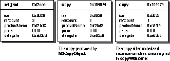

Adopted By:
Various OpenStep classes
Declared In:
Foundation/NSObject.h
NSCopying declares one method, copyWithZone:, but copying is commonly invoked with the convenience method copy. The copy method is defined for all NSObjects and simply invokes copyWithZone: with the default zone.
When value objects are passed as method arguments or returned from a method, it is common to use a copy instead of the object itself. For example, consider the following method for assigning a string to an object's name instance variable.
- (void)setName:(NSString *)aName
{
[name autorelease];
name = [aName copy];
}
Storing a copy of aName has the effect of producing an object that's independent of the original, but has the same contents. Subsequent changes to the copy don't affect the original, and changes to the original don't affect the copy. Similarly, it is common to return a copy of an instance variable instead of the instance variable itself. For example, this method returns a copy of the name instance variable:
- (NSString *)name
{
return [[name copy] autorelease];
}
alloc and init..., or you can use NSCopyObject(). To choose the one that's right for your class, you need to consider the following questions:
The implementation of an instance variable's set method should reflect the kind of copying you need to use. You should deeply copy the instance variable if the corresponding set method copies the new value as in this method:
- (void)setMyVariable:(id)newValue
{
[myVariable autorelease];
myVariable = [newValue copy];
}
You should shallowly copy the instance variable if the corresponding set method retains the new value as in this method:
- (void)setMyVariable:(id)newValue
{
[myVariable autorelease];
myVariable = [newValue retain];
}
Similarly, you should shallowly copy the instance variable if its set method simply assigns the new value to the instance variable without copying or retaining it as in this method:
- (void)setMyVariable:(id)newValue
{
myVariable = newValue;
}
To produce a copy of an object that's truly independent of the original, the entire object must be deeply copied. Every instance variable must be duplicated. If the instance variables themselves have instance variables, those too must be duplicated, and so on. In many cases, a mixed approach is more useful. Pointer instance variables that can be thought of as data containers are generally deeply copied, while more sophisticated instance variables like delegates are shallowly copied.
For example, a Product class adopts NSCopying. Product instances have a name, a price, and a delegate as declared in this interface.
@interface Product : NSObject <NSCopying>
{
NSString *productName;
float price;
id delegate;
}
@end
Copying a Product instance produces a deep copy of productName because it represents a flat data value. On the other hand, the delegate instance variable is a more complex object capable of functioning properly for both Products. The copy and the original should therefore share the delegate. The following figure represents the images of a Product instance and a copy in memory.
The different pointer values for productName illustrate that the original and the copy each have their own productName string object. The pointer values for delegate are the same, indicating that the two product objects share the same object as their delegate.
alloc, init..., and set methods. On the other hand, if your class inherits NSCopying behavior, its implementation only has to copy instance variables declared in your class. It invokes the superclass's implementation to copy inherited instance variables.
copyWithZone: depends on your familiarity with the superclass's implementation. There are essentially two ways to make a copy of an object, using alloc and init... or using the function NSCopyObject(). If the superclass used or might have used NSCopyObject(), you must handle instance variables differently than you would otherwise.
copyWithZone: using alloc, init..., and set methods. For example, an implementation of copyWithZone: for the Product class described above might be implemented in the following way:
- (id)copyWithZone:(NSZone *)zone
{
Product *copy = [[Product alloc]
initWithProductName:[self productName]
price:[self price]];
[copy setDelegate:[self delegate]];
return copy;
}
Because implementation details associated with inherited instance variables are encapsulated in the superclass, it is generally better to implement NSCopying with the alloc, init... approach. Doing so uses policy implemented in set methods to determine the kind of copying needed of instance variables.
NSCopyObject(). NSCopyObject() creates an exact shallow copy of an object by copying instance variable values but not the data they point to. For example, NSCell's implementation of copyWithZone: could be defined in the following way.
- (id)copyWithZone:(NSZone *)zone
{
NSCell *cellCopy = NSCopyObject(self, 0, zone);
/* Assume that other initialization takes place here. */
cellCopy->image = nil;
[cellCopy setImage:[self image]];
return cellCopy;
}
In the implementation above, NSCopyObject() creates an exact shallow copy of the original cell. This behavior is desirable for copying instance variables that aren't pointers or are pointers to non-retained data that is shallowly copied. Pointer instance variables for retained objects need additional treatment.
In the copyWithZone: example above, image is a pointer to a retained object. The policy to retain the image is reflected in the following implementation of the setImage: accessor method.
- (void)setImage:(NSImage *)anImage
{
[image autorelease];
image = [anImage retain];
}
Notice that setImage: autoreleases image before it reassigns it. If the above implementation of copyWithZone: hadn't explicitly set the copy's image instance variable to nil before invoking setImage:, the image referenced by the copy and the original would be released without a corresponding retain.
Even though image points to the right object, it is conceptually uninitialized. Unlike the instance variables that are created with alloc and init..., these uninitialized variables aren't nil-valued. You should explicitly assign initial values to these variables before using them. In this case, cellCopy's image instance variable is set to nil, then it is set using the setImage: method.
The effects of NSCopyObject() extend to a subclass's implementation. For example, an implementation of NSSliderCell could copy a new titleCell instance variable in the following way.
- (id)copyWithZone:(NSZone *)zone
{
NSSliderCell *cellCopy = [super copyWithZone:zone];
/* Assume that other initialization takes place here. */
cellCopy->titleCell = nil;
[cellCopy setTitleCell:[self titleCell]];
return cellCopy;
}
The superclass's copyWithZone: method is invoked to copy inherited instance variables. When you invoke a superclass's copyWithZone: method, assume that new object instance variables are uninitialized if there's any chance that the superclass implementation uses NSCopyObject(). Explicitly assign a value to them before using them. In this example, titleCell is explicitly set to nil before setTitleCell: is invoked.
The implementation of an object's retain count is another consideration when using NSCopyObject(). If an object stores its retain count in an instance variable, the implementation of copyWithZone: must correctly initialize the copy's retain count. The following figure illustrates the process.

The first object represents a Product instance in memory. The value in refCount indicates that the instance has been retained three times. The second object is a copy of the Product instance produced with NSCopyObject(). Its refCount value matches the original. The third object represents the copy returned from copyWithZone: after refCount is correctly initialized. After copyWithZone: creates the copy with NSCopyObject(), it assigns the value 1 to the refCount instance variable. The sender of copyWithZone: implicitly retains the copy and is responsible for releasing it.
Immutable classes can implement NSCopying very efficiently. Since immutable objects don't change, there is no need to duplicate them. Instead, NSCopying can be implemented to retain the original. For example, copyWithZone: for an immutable string class can be implemented in the following way.
- (id)copyWithZone:(NSZone *)zone
{
return [self retain];
}
alloc and init... in classes that don't inherit copyWithZone:.
copyWithZone: when NSCopying behavior is inherited. If the superclass implementation might use NSCopyObject(), make explicit assignments to pointer instance variables for retained objects.
copyWithZone:(NSZone *)zone
Returns a new instance that's a copy of the receiver. Memory for the new instance is allocated from zone, which may be NULL. If zone is NULL, the new instance is allocated from the default zone, which is returned from NSDefaultMallocZone(). The returned object is implicitly retained by the sender, who is responsible for releasing it. The copy returned is immutable if the consideration "immutable vs. mutable" applies to the receiving object; otherwise the exact nature of the copy is determined by the class.
See also:
- mutableCopyWithZone: (NSMutableCopying protocol), - copy (NSObject)
Copyright © 1997, Apple Computer, Inc. All rights reserved.